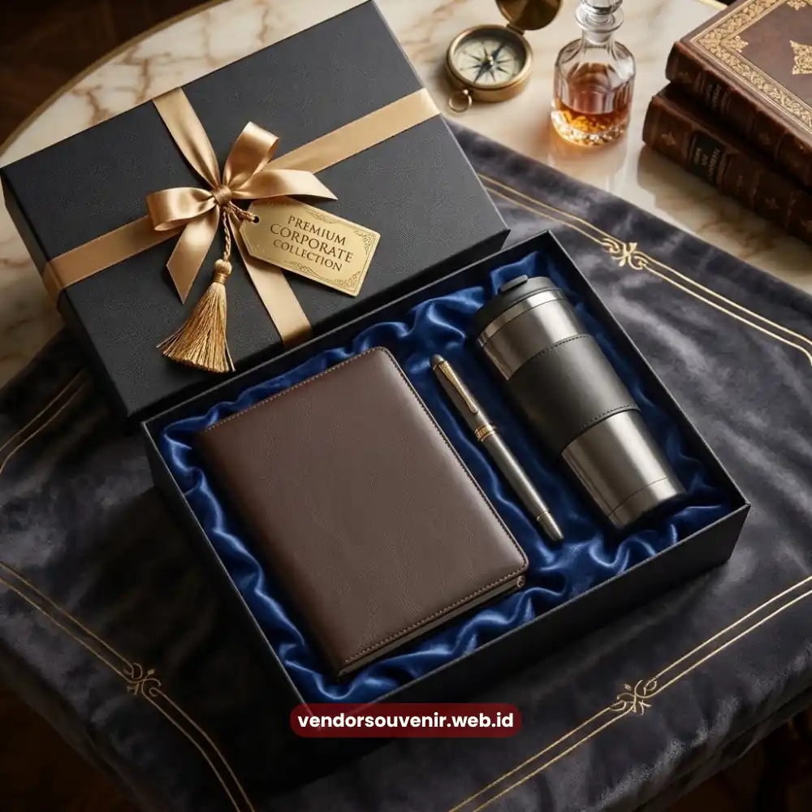

Daftar Isi
Isi welcome kit karyawan baru sebaiknya mencakup kombinasi barang fungsional dan barang bernuansa identitas perusahaan, seperti alat tulis, apparel, perlengkapan kerja harian, dan item personal yang mencerminkan budaya kerja.
Kombinasi ini membantu karyawan baru merasa diterima sekaligus memahami nilai perusahaan sejak hari pertama.
- Isi welcome kit idealnya menyeimbangkan fungsi praktis dan nilai simbolis identitas perusahaan.
- Kategori barang dapat dibagi menjadi kebutuhan kerja harian, apparel, dan item personal.
- Penyesuaian isi welcome kit berdasarkan divisi atau level jabatan dapat meningkatkan relevansi barang bagi penerima.
- Vendor Souvenir membantu menyusun konsep isi welcome kit yang sesuai kebutuhan dan anggaran perusahaan.
Kategori Barang Apa Saja yang Umum Dimasukkan dalam Welcome Kit?
Kategori barang yang umum dimasukkan dalam welcome kit meliputi perlengkapan kerja harian, apparel berlogo perusahaan, serta item personal yang mendukung kenyamanan karyawan di lingkungan kerja baru.
Perlengkapan kerja harian biasanya menjadi fondasi utama isi welcome kit karena langsung digunakan sejak hari pertama masuk kantor.
Notebook, pulpen, dan organizer meja termasuk item yang sering dipilih karena fungsinya yang relevan dengan aktivitas kerja sehari-hari, sekaligus dapat dicetak logo perusahaan secara rapi.
Apparel berlogo, seperti kaos polo atau jaket ringan, juga umum ditambahkan karena berperan ganda sebagai identitas visual sekaligus sarana promosi tidak langsung ketika karyawan mengenakannya di luar lingkungan kantor.
Selain itu, item personal seperti tumbler atau tas kanvas kerap dipilih karena memiliki nilai penggunaan jangka panjang, sehingga kesan positif terhadap perusahaan dapat bertahan lebih lama.
Kombinasi ketiga kategori ini membantu welcome kit terasa lebih menyeluruh, tidak hanya sebagai seremoni penyambutan, tetapi juga sebagai perlengkapan yang benar-benar mendukung produktivitas karyawan baru.
Bagaimana Menentukan Isi Welcome Kit yang Relevan dengan Budaya Kerja Perusahaan?
Menentukan isi welcome kit yang relevan dengan budaya kerja dapat dilakukan dengan menyesuaikan gaya desain, jenis barang, dan pesan yang ingin disampaikan perusahaan kepada karyawan baru sejak awal masa kerja.
Perusahaan dengan budaya kerja kasual dan kreatif, misalnya di sektor teknologi atau startup, cenderung memilih desain yang lebih playful dan warna yang berani pada setiap item welcome kit.
Sebaliknya, perusahaan dengan budaya kerja formal, seperti sektor keuangan atau konsultasi, umumnya lebih memilih desain minimalis dengan warna netral yang mencerminkan citra profesional.
Selain gaya desain, pesan yang disematkan pada welcome kit juga dapat disesuaikan dengan nilai perusahaan.
Beberapa perusahaan menambahkan kartu ucapan berisi visi misi singkat, sementara yang lain memilih pendekatan lebih personal dengan mencantumkan nama karyawan pada salah satu item, seperti notebook atau tumbler.
Penyesuaian ini penting karena welcome kit yang selaras dengan budaya kerja cenderung terasa lebih autentik dan tidak sekadar formalitas administratif semata.

Inspirasi Isi Welcome Kit Karyawan Baru
Apakah Isi Welcome Kit Perlu Disesuaikan untuk Setiap Divisi atau Level Jabatan?
Isi welcome kit dapat disesuaikan untuk setiap divisi atau level jabatan apabila perusahaan ingin menghadirkan pengalaman onboarding yang lebih personal, meskipun sebagian besar perusahaan tetap memilih standar isi yang sama untuk seluruh karyawan baru demi efisiensi.
Bagi perusahaan dengan struktur organisasi besar, penyesuaian isi welcome kit berdasarkan divisi dapat memberikan sentuhan relevansi tambahan.
Misalnya, karyawan di divisi lapangan mungkin lebih membutuhkan perlengkapan praktis seperti tas ransel dan botol minum tahan lama, sementara karyawan di divisi kreatif dapat menerima tambahan alat gambar atau sketchbook sebagai bagian dari welcome kit.
Meski demikian, penyesuaian berdasarkan level jabatan perlu dilakukan dengan hati-hati agar tidak menimbulkan kesan diskriminatif antar karyawan.
Pendekatan yang lebih aman biasanya berupa penambahan satu atau dua item khusus, bukan perombakan menyeluruh terhadap keseluruhan paket welcome kit.
Bagi perusahaan yang ingin tetap efisien namun tetap relevan, standar isi welcome kit yang seragam dengan sedikit variasi warna atau desain sesuai divisi sering menjadi solusi yang lebih praktis diterapkan.
Bagaimana Memastikan Kualitas Barang dalam Isi Welcome Kit Tetap Konsisten?
Kualitas barang dalam isi welcome kit dapat tetap konsisten dengan memilih bahan yang sesuai standar korporat, melakukan kontrol kualitas pada setiap tahap produksi, serta memastikan seluruh item diproduksi dalam satu proses terintegrasi.
Pemilihan bahan menjadi langkah awal yang menentukan daya tahan barang dalam jangka panjang.
Bahan yang terlalu tipis atau mudah rusak dapat menurunkan nilai kesan welcome kit di mata karyawan, meskipun desainnya sudah menarik secara visual.
Oleh karena itu, penting untuk memastikan spesifikasi bahan sesuai dengan kebutuhan penggunaan sehari-hari.
Proses produksi yang terintegrasi dalam satu alur kerja juga membantu menjaga konsistensi hasil akhir, terutama pada elemen branding seperti warna logo dan posisi cetak.
Ketidakkonsistenan kecil pada detail ini dapat memengaruhi persepsi profesionalisme perusahaan di mata karyawan baru.
Menyusun konsep isi welcome kit yang tepat memang membutuhkan perhatian pada banyak detail, mulai dari pemilihan kategori barang hingga konsistensi kualitas produksi.

Vendor Souvenir Siap Membantu Anda Menghasilkan Welcome Kit Terbaik
Pertanyaan yang Sering Diajukan (FAQ)
Apakah welcome kit harus selalu berisi apparel seperti kaos atau jaket?
Apparel bukan keharusan mutlak, namun sering dipilih karena berfungsi ganda sebagai identitas visual sekaligus sarana promosi tidak langsung bagi perusahaan.
Berapa jumlah item ideal dalam satu paket welcome kit?
Jumlah item dapat bervariasi tergantung anggaran dan kebutuhan perusahaan, sehingga tidak ada standar baku yang berlaku untuk seluruh perusahaan.
Apakah isi welcome kit bisa ditambah dengan barang yang dipersonalisasi nama karyawan?
Personalisasi nama pada salah satu item, seperti notebook atau tumbler, dapat menjadi opsi tambahan untuk menghadirkan kesan yang lebih personal bagi karyawan baru.
Maroon Souvenir
Partner Corporate Gift terpercaya di Indonesia. Berpengalaman melayani ratusan perusahaan sejak 2018.
Lihat Portofolio Kami